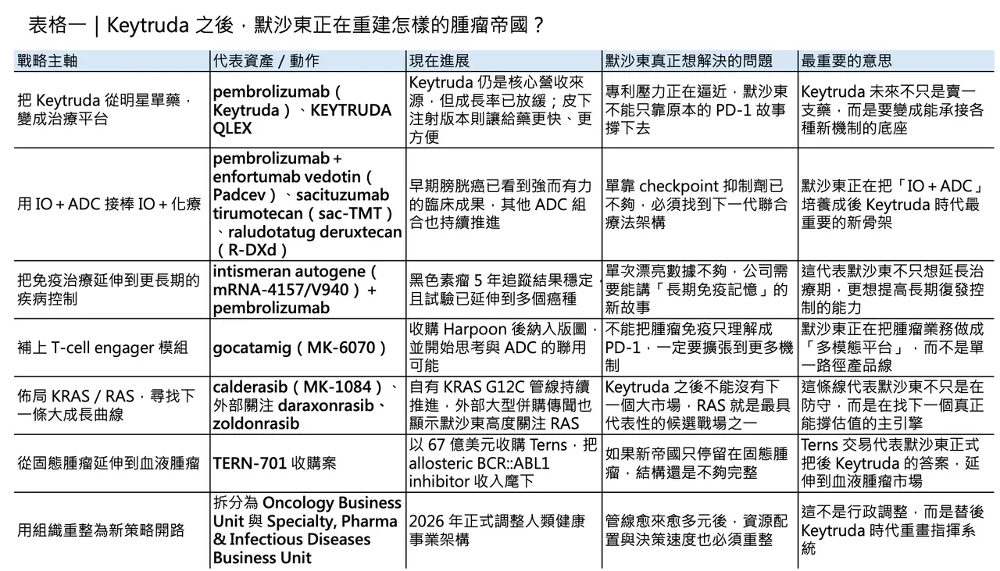
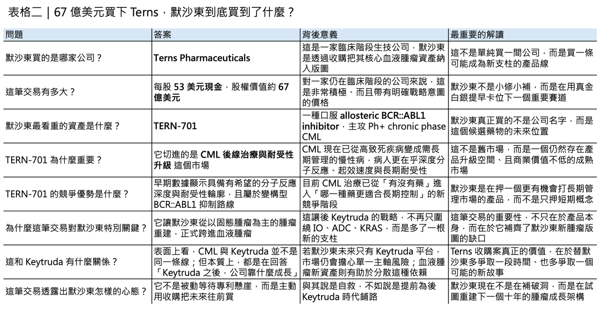

67 億美元買下 Terns，默沙東真正要買的，是 Keytruda 之後的時間
2026 年才過了不到三個月，默沙東已經用兩個動作，把自己對「後 Keytruda 時代」的答案講得愈來愈清楚。
分享這篇分析
把這篇文章轉給關注生技醫藥、公司研究或資本市場的朋友。
第一個動作，是在 ASCO GU 端出 pembrolizumab（Keytruda） 合併 enfortumab vedotin（Padcev） 的 KEYNOTE-B15 成績：在可接受順鉑治療的肌層浸潤性膀胱癌患者中，這套術前加術後方案把復發、進展或死亡風險降低 47%，死亡風險降低 35%，兩年無事件存活率約 79.4%，顯著高於傳統新輔助化療加手術的 66.2%。
第二個動作，則是 3 月 25 日宣布以每股 53 美元現金、總股權價值約 67 億美元收購 Terns Pharmaceuticals，將 TERN-701 這個口服 allosteric BCR::ABL1 inhibitor 收進版圖。
把這兩件事放在一起看，意思其實很直白：默沙東已經不再只是替 Keytruda 找補強，而是在替整個腫瘤帝國重寫下一階段的權力結構。
壓力其實早就擺在財報上

這種急迫感不是市場過度解讀，而是默沙東自己財報已經把壓力攤在陽光下。
公司 2025 年全年營收為 650.1 億美元，其中 KEYTRUDA／KEYTRUDA QLEX 貢獻 316.8 億美元，年增 7%，依然是最核心的成長引擎；但另一頭，GARDASIL／GARDASIL 9 全年銷售降到 52.33 億美元，年減 39%，第四季也因部分亞洲市場需求疲弱而下滑逾三成。
幾乎同一時間，默沙東又在 2026 年 2 月把 Human Health 重新拆成 Oncology Business Unit 與 Specialty, Pharma & Infectious Diseases Business Unit。
這不是一般意義上的組織微調，而更像是公司正式承認：當 Keytruda 的主要專利壁壘逐步逼近 2028 年，默沙東不能再靠單一超級產品維持敘事完整，它必須把整個腫瘤業務改造成多模組、多支柱、可接力的系統。
Keytruda 不再只是主角，而是整個新體系的底座

也因此，現在的 Keytruda，角色已經變了。
它不再只是默沙東手上那支最會賺錢的 PD-1 抑制劑，而是被重新定義成一個可以不斷疊加新模組的「平台底座」。
這種轉向，一方面是因為 Keytruda 自身成長率已從 2024 年的 18% 放緩到 2025 年的 7%；另一方面，也是因為外部挑戰已經不再只是抽象威脅。
發表於 The Lancet 的 HARMONi-2 顯示，ivonescimab 在 PD-L1 陽性非小細胞肺癌一線治療中，將中位無惡化存活期拉高到 11.14 個月，而對照的 pembrolizumab 為 5.82 個月，這是市場第一次真正開始認真面對「Keytruda 也可能被正面擊穿」的場景。
默沙東的回應不是守舊，而是讓 Keytruda 變得更容易被重新組裝：2026 年 1 月啟動的 KANDLELIT-007，就是拿 calderasib（MK-1084） 併用 KEYTRUDA QLEX 去打 KRAS G12C 突變的晚期非小細胞肺癌一線治療；而 KEYTRUDA QLEX 的價值，除了把給藥壓縮到 1 至 2 分鐘，更在於它讓 pembrolizumab 從「靜脈輸注產品」變成更容易被放進聯合療法框架的基礎平台。
mRNA 癌症疫苗，也被拉進 Keytruda 體系

同樣的邏輯，也完整體現在個人化癌症疫苗上。
2026 年 1 月，默沙東與 Moderna 公布 intismeran autogene（mRNA-4157/V940） 合併 pembrolizumab 的 5 年追蹤資料：在高風險、已完全切除的第三／四期黑色素瘤患者中，這套組合將復發或死亡風險降低 49%，而且效果到了 5 年仍然維持。
更值得注意的是，這不再只是單點試驗的漂亮訊號。根據雙方公告，Merck／Moderna 目前已經把這個計畫推進到 8 項第二／三期試驗，涵蓋黑色素瘤、非小細胞肺癌、膀胱癌與腎細胞癌。
這背後真正的戰略含義是：默沙東押注的不是某一支癌症疫苗能不能成功，而是 pembrolizumab 能不能持續作為免疫平台，被一個又一個新機制往上疊。
T-cell engager 也被正式納入新帝國拼圖
如果再往前看一步，默沙東連 T-cell engager 這條線也沒有放過。
2024 年完成 Harpoon Therapeutics 收購後，公司把原本的 HPN328 納入體系並改名為 gocatamig（MK-6070），鎖定 DLL3，主攻小細胞肺癌與神經內分泌腫瘤。接著在 2024 年 8 月，默沙東又把 MK-6070 納入與第一三共的合作框架，準備與 ifinatamab deruxtecan（I-DXd） 等資產做聯合開發。
這透露出的訊號很鮮明：默沙東已經不再把腫瘤免疫理解成單一 checkpoint 抑制，而是把 IO 擴展成能與 ADC、TCE、KRAS inhibitor、個人化疫苗彼此咬合的多模態治療工程。
ADC 不是補充，而是默沙東真正重押的下一代主戰場
而在所有新模組中，ADC 仍然是默沙東最重押的主戰場。
從 trastuzumab emtansine（T-DM1） 到 trastuzumab deruxtecan（T-DXd），整個產業早就不再懷疑 ADC 能不能成立，現在比的是誰能把 ADC 前移、放大、做成平台。
默沙東雖然不是最早進場者，但近三年的佈局速度極快：
🔹 2022 年拿下 sacituzumab tirumotecan（sac-TMT；MK-2870） 在大中華區以外的權利
🔹 2023 年又與第一三共簽下總潛在金額上看 220 億美元的全球合作，把 patritumab deruxtecan（HER3-DXd）、ifinatamab deruxtecan（I-DXd） 與 raludotatug deruxtecan（R-DXd） 一口氣納入
🔹 到了 2025 年底，還再用一筆與 Blackstone Life Sciences 的 7 億美元研發融資，替 sac-TMT 的高密度後期開發減壓
也就是說，默沙東現在做的不是單點押寶，而是在把「IO＋ADC」培養成接棒「IO＋化療」的新治療骨架。
真正值得看的，不只是量，而是質
其中最值得注意的，還不只是量，而是質。
像 raludotatug deruxtecan（R-DXd） 這類鎖定 CDH6 的 ADC，已在 2025 年拿到 FDA Breakthrough Therapy Designation，適應症是先前接受過 bevacizumab、且 CDH6 表現陽性的鉑金抗藥性卵巢癌。
這種資產的戰略意義，不在於它是不是下一支最大眾化的 blockbuster，而在於它代表默沙東在 ADC 世界裡，已不再只是跟著熱門靶點跑，而是開始切入更細分、卻也更有可能建立差異化護城河的位置。
這讓默沙東的後 Keytruda 版圖，看起來不像一條單一路徑，而更像一個跨固態腫瘤、多模態、多層次的投資組合。
真正讓市場不安的，是第二成長引擎還沒有完全成形
但如果故事只停在這裡，市場的不安不會消失。
因為就算 IO、ADC、TCE、KRAS 這些拼圖都在補，默沙東真正還沒完全解決的問題仍然是：
Keytruda 之後，第二個足以撐起估值想像的大型成長引擎，到底在哪裡？
也因此，3 月 25 日宣布收購 Terns，才會顯得特別重要。
這筆交易表面上是在買一家臨床期公司，實際上買的是一個新支柱的可能性。根據 Merck 與 Terns 公告，這筆交易以每股 53 美元現金進行，股權價值約 67 億美元，扣除取得現金後約 57 億美元，較 3 月 24 日的 60 天與 90 天成交量加權平均價分別溢價 31% 與 42%；交易預計在 2026 年第二季完成，並將以 asset acquisition 入帳，讓 Merck 在 2026 年第二季與全年認列約 58 億美元費用。
這不是小修小補，而是一筆非常明確、非常主動的管線再配置。
為什麼是 TERN-701？
為什麼是 TERN-701？
因為這個資產切中的，正是默沙東過去相對薄弱、卻又具有長期商業吸引力的血液腫瘤賽道。
TERN-701 是一個口服 allosteric BCR::ABL1 tyrosine kinase inhibitor，目前正在 Phase 1/2 CARDINAL 試驗中，用於至少接受過一線 TKI、但因治療失敗、反應不佳或無法耐受而需要後續治療的 Ph+ chronic phase CML 患者，並已在 2024 年取得 FDA Orphan Drug Designation。
根據 Terns 於 2025 年 ASH 公布的資料，TERN-701 在 24 週時達到 64% 的 major molecular response，且在高疾病負擔、經過多線治療的患者中仍可見深度分子反應；Merck 與 Terns 的公告也都強調，目前觀察到的多數治療相關不良事件為低等級，嚴重不良事件與停藥比例偏低。
這代表默沙東這次買下的，不是早期概念，而是一個已經開始展現「best-in-disease」輪廓的候選藥物。
默沙東真正買的，不只是分子，而是一條可商業化的血液腫瘤賽道
更關鍵的是，CML 並不是一個看起來不大、實際上也不大的冷門角落。
當年 imatinib 改寫 CML 預後後，這個疾病已經從高致死血癌變成許多患者需要長期用藥管理的慢性疾病；因此，市場競爭的重心也逐漸從「能不能救命」轉向「能不能更快達到更深分子反應、能不能更好耐受、能不能支持更長期疾病控制」。
這正是為什麼諾華的 Scemblix（asciminib） 能在 2025 年做到 3.91 億美元銷售，且 Novartis 已把它的峰值銷售預期上修到 40 億美元以上。
放在這個背景下，默沙東收購 Terns 就不再只是為了補一個資產，而是要搶進一個已被證明存在商業天花板、但仍有產品升級空間的血液腫瘤市場。
這場賽道，也不是只有默沙東和諾華在跑
而且，這條賽道現在也不是只有默沙東與諾華兩個玩家。
美國還有 Enliven 正在推進高度選擇性的 ELVN-001，主打 active-site BCR::ABL 抑制；日本武田則在 2024 年與 Ascentage 簽下 olverembatinib 的全球選擇權協議，顯示第三代 BCR-ABL TKI 仍被視為具有全球授權價值的標的。
從這個角度看，默沙東買 Terns，並不是逆勢插旗，而是正式加入一場正在升溫的全球 CML 新藥競賽。
值得注意的是，TERN-701 這個資產本身也帶有跨國授權背景：Terns 在 2020 年曾把腫瘤領域的開發與商業化權利授予 Hansoh 於中國、台灣、香港與澳門，今年 1 月雙方又修約，讓 Terns 取得前述地區以外、特定 Hansoh 專利的全球獨家授權。換句話說，Merck 現在接手的，不只是分子本身，也是一個已經被重新整理過全球權利邊界的跨區資產。
結語：默沙東真正要買的，是 Keytruda 之後的時間
把這一切串起來看，默沙東現在做的事，已經不能只被理解成「專利懸崖前的焦慮防守」。
更精確地說，它是在把過去由 Keytruda 單核驅動的腫瘤帝國，改造成一個由 pembrolizumab 平台、ADC 組合、TCE 模組、RAS 路線與血液腫瘤新資產 共同支撐的多中心結構。
🌿 KEYNOTE-B15 代表的是 Keytruda 在可治癒場景中的前移
🌿 intismeran autogene 代表的是免疫平台的延伸
🌿 sac-TMT、R-DXd 與 MK-6070 代表的是多模態腫瘤工程
🌿 而 TERN-701，則是默沙東第一次把「後 Keytruda 時代」的答案，從固態腫瘤明確延伸到血液腫瘤
這家公司當然還沒有找到第二個 Keytruda，但至少它已經不再只把希望放在複製另一支 PD-1。
它真正想建立的，是一個即便失去 Keytruda 獨占，也依然能持續產生新標準治療的機器。
問題只剩下一個：這台機器最後能不能組出下一個 300 億美元級別的引擎。
若能，默沙東就是從舊王朝平順跨到新秩序；若不能，今天這一連串宏大的交易與布局，最終仍可能被市場視為一場昂貴但必要的續命工程。
參考資料：
[0]:各公司官網＆ 公開資料
[1]:
KEYTRUDA® (pembrolizumab) Plus Padcev® (enfortumab vedotin-ejfv) Reduced Risk of Event-Free Survival Events by 47% and Risk of Death by 35% for Cisplatin-Eligible Patients with Muscle-Invasive Bladder Cancer When Given Before and After Surgery - Merck.com
First and only immunotherapy plus antibody-drug conjugate regimen, used perioperatively, to significantly extend survival for these patients KEYNOTE-B15 is the sixth study demonstrating overall survival with a KEYTRUDA-based regimen in an earlier-stage ca
www.merck.com
[2]:
Merck & Co., Inc., Rahway, N.J., USA Announces Fourth-Quarter and Full-Year 2025 Financial Results; Highlights Progress Advancing Broad, Diverse Pipeline - Merck.com
Reports Strength in Oncology and Animal Health, Plus Increasing Contributions From WINREVAIR and CAPVAXIVE Fourth-Quarter Worldwide Sales Were $16.4 Billion (5% Growth; 4% Growth ex-FX) Fourth-Quarter GAAP EPS Was $1.19; Non-GAAP EPS Was $2.04; GAAP and N
www.merck.com
"Merck & Co., Inc., Rahway, N.J., USA Announces Fourth-Quarter and Full-Year 2025 Financial Results; Highlights Progress Advancing Broad, Diverse Pipeline - Merck.com"
[3]:
Moderna & Merck Announce 5-Year Data for Intismeran Autogene in Combination With KEYTRUDA® (pembrolizumab) Demonstrated Sustained Improvement in the Primary Endpoint of Recurrence-Free Survival in Patients With High-Risk Stage III/IV Melanoma Following Co
At a median five-year pre-planned follow-up of the Phase 2b KEYNOTE-942/mRNA-4157-P201 study, intismeran autogene in combination with KEYTRUDA reduced the risk of recurrence or death by 49% (HR=0.510; [95% CI, 0.294–0.887]) compared to KEYTRUDA alone Th
www.merck.com
"Moderna & Merck Announce 5-Year Data for Intismeran Autogene in Combination With KEYTRUDA® (pembrolizumab) Demonstrated Sustained Improvement in the Primary Endpoint of Recurrence-Free Survival in Patients With High-Risk Stage III/IV Melanoma Following Complete Resection - Merck.com"
[4]:
Merck Completes Acquisition of Harpoon Therapeutics, Inc. - Merck.com
Acquisition broadens oncology pipeline with a portfolio of novel T-cell engagers including HPN328 (MK-6070), an investigational delta-like ligand 3 (DLL3) targeting T-cell engager Merck (NYSE: MRK), known as MSD outside of the United States and Canada, to
www.merck.com
"Merck Completes Acquisition of Harpoon Therapeutics, Inc. - Merck.com"
[5]:
Kelun-Biotech's TROP2 ADC Sacituzumab tirumotecan (sac-TMT) Approved For Marketing By NMPA Of China For 2L+ Advanced or Metastatic TNBC
/PRNewswire/ -- Sichuan Kelun-Biotech Biopharmaceutical Co., Ltd. (the "Company") announced that the Company received marketing authorization in China from...
www.prnewswire.com
引用本文
若在簡報、報告或社群討論引用，建議附上 Drugnews 原文連結。
Drugnews 編輯部，〈默沙東還能再造一個腫瘤帝國嗎？〉，Drugnews｜藥時事，2026/04/02，https://drugnews.com.tw/articles/2026-04-02-dcard-261221419.html
社群原文
讀完這篇，下一步看
這三篇會優先依主題、標籤與產業脈絡推薦，幫你把同一個問題讀得更完整。

2026 ASCO：生存期翻倍、體內 CAR-T 破局，腫瘤治療正在換一個時代
2026 年美國臨床腫瘤學會年會，也就是 ASCO，最該被記住的贏家，並不是任何一家藥廠，而是癌症患者。

一篇文章講通現在的“禮來”併購邏輯
💡 四個月，五筆交易，若把交易上限全部加總，Eli Lilly 在 2026 年前四個月已經丟出超過 187 億美元的併購火力：1 月的 Ventyx Biosciences、2 月的 Orna Therapeutics、3 月的 Centessa Pharmaceuticals、4 月的 Cro…

投資人請注意，給藥方式是藍海！
這幾年，如果你把跨國藥廠的動作連起來看，會發現一個非常一致、幾乎帶著戰略共識的方向：把原本靠靜脈輸注（IV）的重磅生物藥，盡可能改造成皮下注射（SC）版本。